Published April 12, 2026
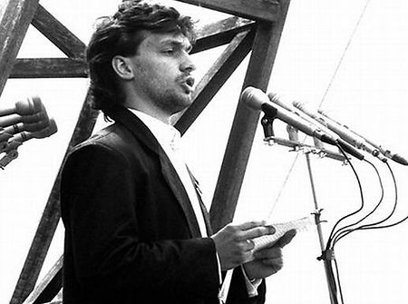
In the summer of 1989, as the twentieth century was nearing its close, a twenty-six-year-old law student called Viktor Orbán stood up in a Budapest park and told a crowd of a hundred thousand people that the Soviet troops should go home.
The speech was broadcast live on state television, which had not yet caught up with the speed of change. It was blunt and electric, and it made him famous overnight. The crowd had gathered to bury Imre Nagy, the reformist prime minister secretly executed after the failed 1956 uprising, whose body had just been exhumed and given a proper funeral, thirty-one years late. It was a ceremony heavy with the specific Hungarian grief of things done too slowly, justice arriving after the person who needed it was already gone. Here is the footage of that speech.
The young man at the microphone did not seem weighted by that grief. He seemed liberated by it. He was the son of a construction engineer from the provincial town of Székesfehérvár. He had a scholarship to study at Oxford, funded by the Soros Foundation — yes, that Soros Foundation, a detail that would become, decades later, one of the most richly ironic footnotes in modern European politics.
At university he began devouring the work of two philosophers. One of these was Friedrich Hayek, who argued that central planning was not just inefficient but morally corrupting. That whenever a state tried to organise society according to a grand design, it inevitably had to suppress the individual choices that made life worth living.

He also read Karl Popper, who warned that utopianism was the most dangerous form of political thinking, because it required adherents to silence anyone who pointed out that the utopia wasn't working.
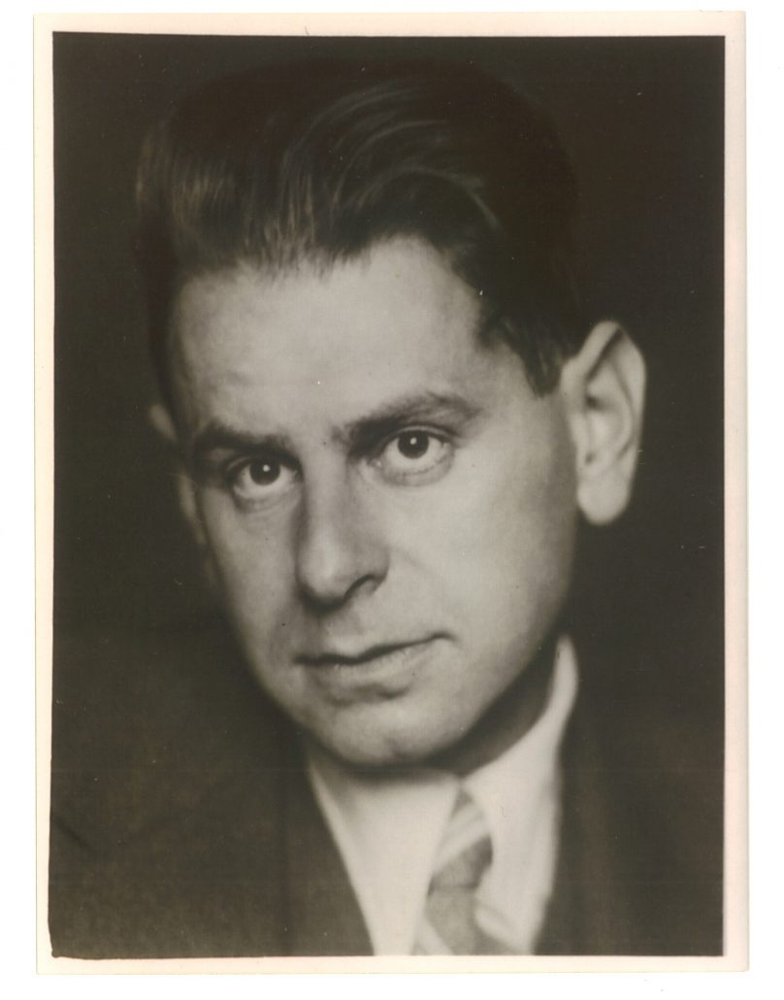
These were not unusual ideas. They were by then the standard intellectual furniture of a liberal Central European education in the dying years of communism. But Orbán absorbed them with a convert's intensity. They invigorated him with an electrifying belief that people could think their way to freedom. The right ideas, clearly held, were a kind of armour.
He was later to discover what happens to that armour when the person wearing it becomes the power they once feared.
~~~~~~~~~~~
But at the beginning of the twentieth century, in 1905, another young Hungarian man named Béla Bartók set off into the countryside with a primitive phonograph cylinder and a fierce, particular obsession. He was going to find the real music of Hungary, unlike the romanticised Gypsy violin music that Liszt had made fashionable. He wanted to go beyond the drawing-room nationalism played at concerts in Vienna and Paris to find the authenti music underneath that music. The songs that farmers sang at harvest, the laments women sang over the dead, the modal melodies that had survived in the Carpathian Basin since before anyone could remember how old they were.
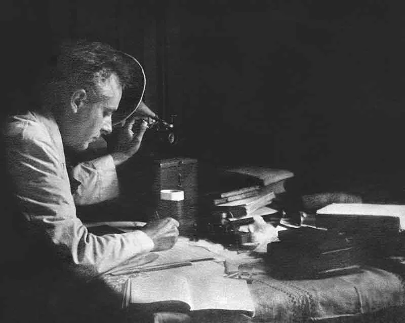
What he found changed him. The folk melodies he transcribed were strange and difficult, built on scales that didn't fit the neat harmonic logic of Western classical music. They were full of intervals that sounded wrong to educated ears and yet somehow felt correct. They resisted the rules. They suggested that underneath the official, polished, concert-hall version of culture, something older and more complicated was always quietly persisting.
Bartók's colleague Zoltán Kodály came to similar conclusions by different routes. Between them, they invented a new Hungarian music that was simultaneously ancient and aggressively modern. String quartets scraped and clashed, piano works sounded like percussion. Together, they built an entire aesthetic on the proposition that authenticity was difficult and that any culture that made itself too comfortable was probably lying about itself.
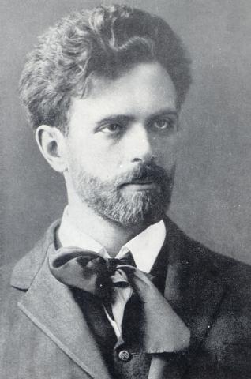
When Bartók's music was performed in Europe and America, audiences often didn't know what to make of it. He insisted it was undeniably Hungarian, and yet it refused to be picturesque, refused to be charming in the way foreigners expected Hungarian things to be charming. It was instead like being handed an object from another civilisation and told that you didn't have the right context to dismiss it.
Bartók's great insight was that authenticity is not a resting state. It is an act of perpetual disruption. The moment a culture declares itself pure and settled, it has already begun to falsify itself.
He spent the last years of his life in exile in New York, having fled Hungary after the Nazi occupation, dying there in 1945, listening to recorded birdsong because his ears missed the countryside sounds of a homeland he could not return to. Hungary, in the end, was too complicated for its own ideal of itself.
Viktor Orbán would have said he understood this. He would have said he was protecting Hungarian complexity. He would have been wrong in the way that all men are wrong when they confuse protecting something with controlling it.
~~~~~~~~~~~
In his first term as prime minister, from 1998 to 2002, Orbán governed as a more or less conventional Central European conservative. His Fidesz party had been founded as a youth liberal movement (the name stood for Young Democrats) but had steadily migrated rightward as its members grew older and the post-communist landscape clarified. Political parties often become more conservative as their members acquire things worth conserving.
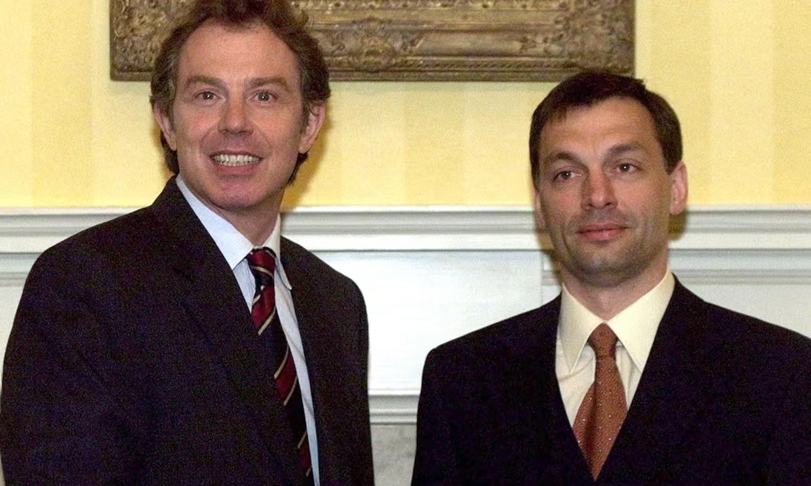
He lost in 2002 and again in 2006, and something happened to him in those years in opposition. He became, by most accounts of people who knew him, a different kind of thinker. He studied the defeats, and what he concluded was not that his ideas had been wrong but that the system within which he was competing had been rigged — by the media, by foreign capital, by a liberal establishment that controlled the terms of democratic debate.
By this time he had stopped reading Popper and began replacing his ideas for those of another philosopher. Still left over from the Nazi occupation were the works of Carl Schmitt, one of the Nazi Party's two official philosophers – the other being Martin Heidegger. Schmitt was a German legal theorist who had taken aim at the British parliamentary system of governance. He argued that politics was not fundamentally about rational deliberation or consensus, but about the distinction between friend and enemy. Here is a photo of Schmitt.
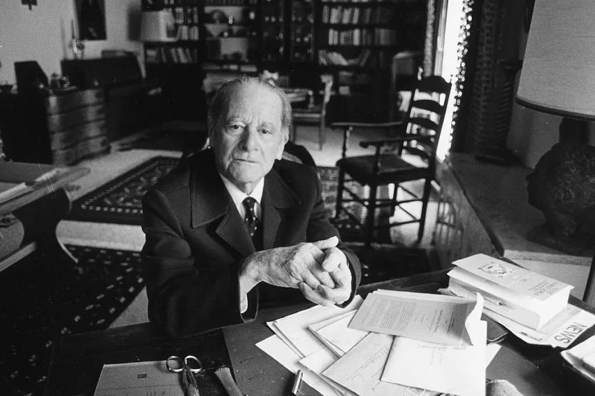
Democracy, Schmitt suggested, was always a contest for power, and any politician who pretended otherwise was simply concealing the power they were already exercising. The liberal who said he believed in universal values was, in this reading, just as tribal as anyone else — just less honest about it.
This was intoxicating. It explained Orbán's losses not as failures of policy or persuasion but as evidence of a hidden structure of power that needed to be dismantled before real democracy could begin. It licensed a politics that was not about arguing better but about building harder — institutions, media, constitutional courts, all remade in Fidesz's image while the language of popular sovereignty provided the moral cover.
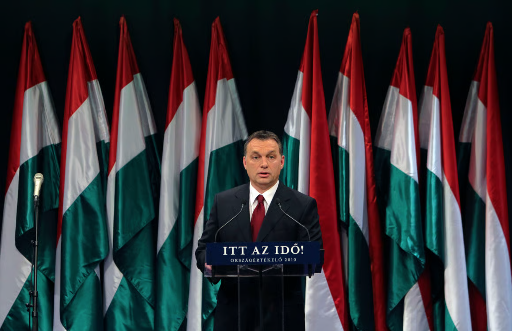
He won in 2010 with a supermajority that allowed him to rewrite the constitution. He proceeded to do exactly what Popper had warned about, the philosopher whose books he had once carried as a student shield. He built a system so perfectly designed to perpetuate itself that questioning it began to feel like questioning Hungary itself. Courts were packed. Electoral boundaries were redrawn. Media ownership was consolidated among allies. Universities and NGOs that received foreign funding were stigmatised. And George Soros — the man whose foundation had once paid for Orbán to study at Oxford — became the face of an imaginary conspiracy against the Hungarian people.
The young man who had stood in that park in 1989 and demanded that foreign powers stop organising Hungarian life had become, by careful degrees, a man who organised everything.
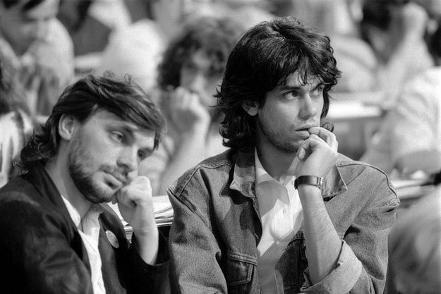
~~~~~~~~~~~
Franz Liszt was the most famous Hungarian who ever lived, though he barely spoke Hungarian. Here he is in a recently colourised photo.
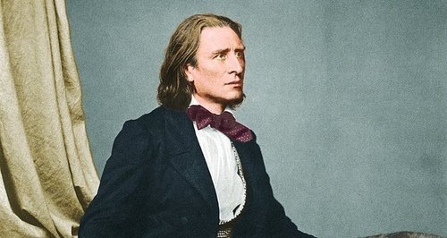
Liszt was The Beatles before The Beatles and screaming girls would pack his audiences watching him hammer away at the piano. His fan frenzy was so spectacular, they gave it a name: Lisztomania.

Born in 1811, he spent most of his life in Paris, Weimar, and Rome, performing to aristocratic audiences who adored his spectacular virtuosity. His Hungarian Rhapsodies were enormously popular. They were romantic, passionate and wild. They sounded like what outsiders imagined Hungary to be.
Late in his life, Liszt became troubled by this. He was told, gently and then less gently, by younger Hungarian composers that his famous rhapsodies were built on Romani musical conventions, not Hungarian folk tradition. They said that his Hungary was a confection, more like a tourist image or a beautiful lie. He tried, in his last years, to write something more honestly Hungarian, but the attempt came too late and felt uncertain. This was the work of a man trying to unlearn sixty years of virtuosity in a hurry.
The story of Liszt is a story about the difference between representing a people and understanding them. He loved Hungary abstractly, the way nationalists always love their nation. He loved an idea of Hungary, as if putting up a mirror into which Hungarians could see something they themselves had put there. But Bartók loved Hungary concretely, which meant loving its difficulty and its strangeness and its refusal to be simply picturesque.
Orbán claimed to love Hungary the way Bartók did. Deeply and specifically, in the face of foreign misunderstanding. But the Hungary he built looked, in the end, much more like Liszt's. It was a performance about Hungary, grand and operatic, built for international effect, concealing its actual people behind a spectacular and increasingly hollow facade.
~~~~~~~~~~~
By the early 2020s, something was visibly wrong with the Hungarian economy. Inflation surged. The forint weakened. Wages stagnated. The European Union withheld funds due to rule-of-law concerns. Oligarchs close to the government had accumulated extraordinary wealth while ordinary Hungarians found that their country felt, in material terms, increasingly left behind by neighbours who had made different choices.
Orbán's response was to intensify the narrative. He framed the EU funds dispute as another foreign conspiracy, the economic difficulties as the price of Hungarian sovereignty, the war in Ukraine as something Brussels and the West were attempting to drag Hungary into against its will. He cultivated a close relationship with Vladimir Putin, maintaining warm ties even after the invasion of Ukraine, and repeatedly frustrated EU efforts to support Kyiv.
What Orbán could not do — what no leader can do once they have built a system of this kind — was simply govern well. The system he had constructed was not designed for good governance. It was designed for the perpetuation of control. When the two things came into conflict, control won.
Finally, where he had replaced the ideas of Popper with Schmitt earlier, he began to replace the ideas of the other philosopher his young self had devoured, Hayek, with the ideas of Roger Scruton.
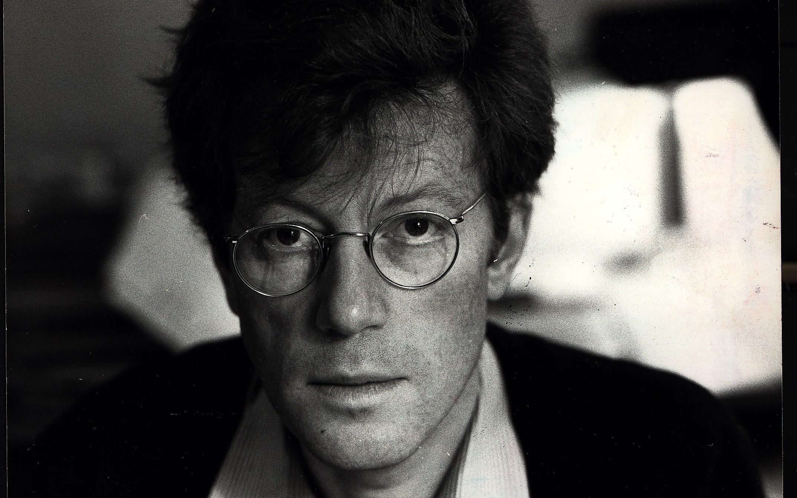
Orbán began citing approvingly the conservative thought by the English philosopher. Scruton had written that the purpose of conservatism was to protect the things people loved from the people who wanted to manage them. But what Scruton also understood, and that Orbán clearly had not read, was that institutions only work when the people inside them genuinely submit to constraints they didn't personally design. A conservatism that is really just one man's will wearing the costume of tradition is not conservatism at all. It is just authoritarianism in period dress.
~~~~~~~~~~~
Tonight, in Budapest, there are people crying on the banks of the Danube. Voters turned out at their highest levels since the end of Communist rule, reflecting both deep fatigue with Orbán and a newly unified opposition capable of mounting a serious challenge.
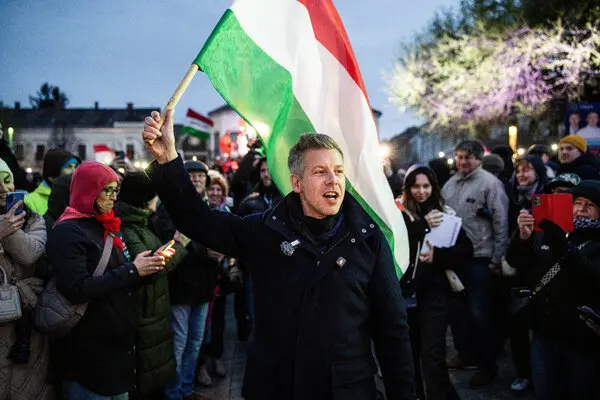
Péter Magyar, a 45-year-old former Fidesz insider who broke with Orbán two years ago, built the upstart Tisza party into a political juggernaut and claimed victory on Sunday night. He was not a revolutionary. He was a divorced father of three, a man who had once been part of the system and who had become, through personal circumstances, its most credible critic. This is how systems like Orbán's usually end. Not in revolution but in defection. In the quiet, cumulative decision of enough ordinary people that the performance has gone on too long.
Orbán, in his concession speech, said he would keep fighting, promising to serve the Hungarian nation from opposition. He did not say he was wrong. He never will. Men who have built their sense of self on the idea that they are the only authentic expression of their nation's will cannot afford to be wrong. The cost of being wrong is existential. It means that the cage they built was, in the end, a cage they built for themselves.
In 1937, Bartók finished Sonata for Two Pianos and Percussion. He believed that the excesses of the Romanticists, like Liszt before him, had become unbearable for many composers and that this had prompted a shift toward the more rigid, clean structures seen in this Sonata.
Hungary, this evening, has once again rejected the comfort of its kitch Romantic postcard picturesque politics. It does not yet know what comes next. What it knows is that something has stopped — a long, exhausting, spectacular, terrible performance that the conductor kept insisting was authentic.
Just like in 1989, today offers up another opportunity for Hungarians to replace the failed dreams of the young Orbán with the more rigid, clean structures that Bartók believed represented the authentic Hungary beneath.